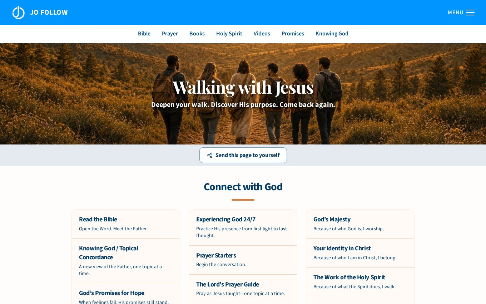

JO Follow
Helping a reader find the next step after an outreach visit.
Visit the live website ↗Organization
JesusOnline Ministries
Project type
Discipleship journeys
My role
Journey implementation, digital publishing, and resource navigation
The challenge
A first-time visitor arriving from an outreach page and a returning reader working through a guide need different starting points.
My approach
I work on the response-specific landing destinations and the reading paths that follow them. I organize supplied chapters, statements, and discipleship resources into sequences that readers can enter or revisit from a direct link.
Ongoing in-house work with the ministry’s authors and content team.

